C++ 算法进阶系列之从 Brute Force 到 KMP 字符串匹配算法
原创 一枚大果壳 编程驿站 2023年01月12日 21:13 湖南

编程驿站
《果壳信奥编程》纯专业技术公众号！学编程，走信奥，就找果壳信奥编程……
182篇原创内容
公众号
1. 字符串匹配算法
所谓字符串匹配算法，简单地说就是在一个目标字符串中查找是否存在另一个模式字符串。如在字符串 "ABCDEFG" 中查找是否存在 “EF” 字符串。
可以把字符串 "ABCDEFG" 称为原始（目标）字符串，“EF” 称为子字符串或模式字符串。
本文通过如下 3 种字符串匹配算法之间的差异性来探究 KMP 算法的本质。
BF（Brute Force，暴力检索算法）RK （Robin-Karp 算法）KMP （D.E.Knuth、J.H.Morris、V.R.Pratt 算法）
2. BF(Brute Force，暴力检索)
BF 算法是一种原始、低级的穷举算法。
2.1 算法思想
如下使用长、短指针方案描述 BF 算法：
- 初始指针位置： 长指针指向原始字符串的第一个字符位置、短指针指向模式字符串的第一个字符位置。这里引入辅助指针概念，并不是必须的。
Tips： 辅助指针是长指针的替身，替长指针和短指针所在位置的字符比较。每次初始化长指针位置时，让辅助指针和长指针指向同一个位置。
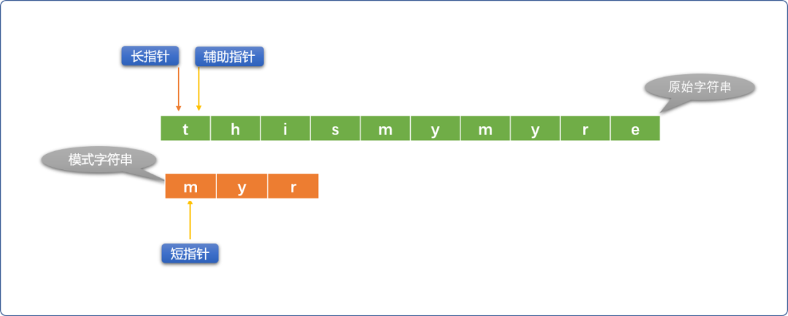
- 如果长、短指针位置的字符不相同，则短指针不动、长指针向右移动。如果长、短指针所指位置的字符相同，则用辅助指针替代长指针（长指针位置不动）和短指针位置的字符比较，如果比较相同，则同时向右移动辅助指针和短指针。
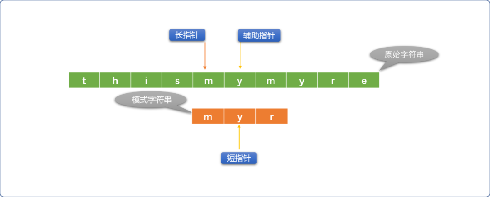
- 如果辅助指针和短指针位置的字符不相同，则重新初始化长指针位置（向右移动），短指针恢复到最原始状态。
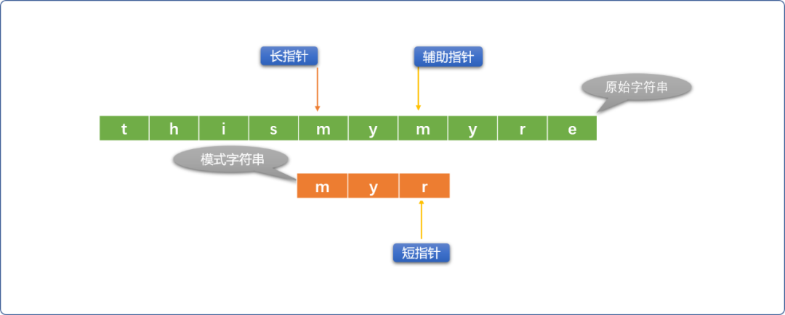
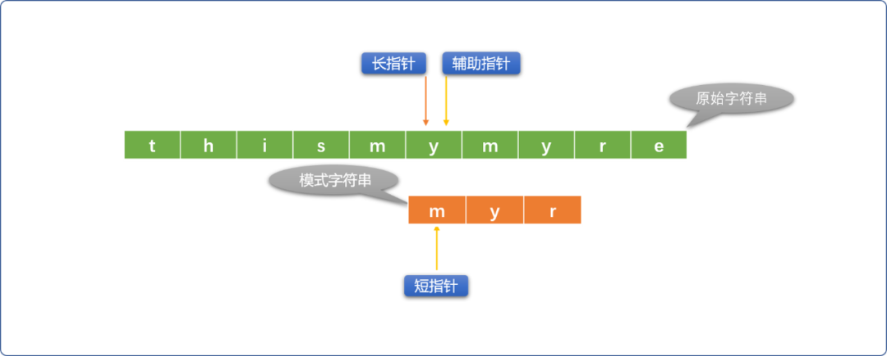
- 借助循环或者递归的方案重复上述流程，直到出口条件成立。
查找失败：长指针到达了原始字符串的尾部。当 长指针位置=原始字符串长度 - 模式字符串长度+1 时就可以认定查找失败。
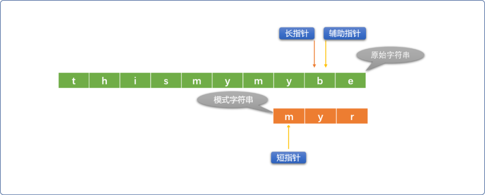
查找成功： 短指针到达模式字符串尾部。
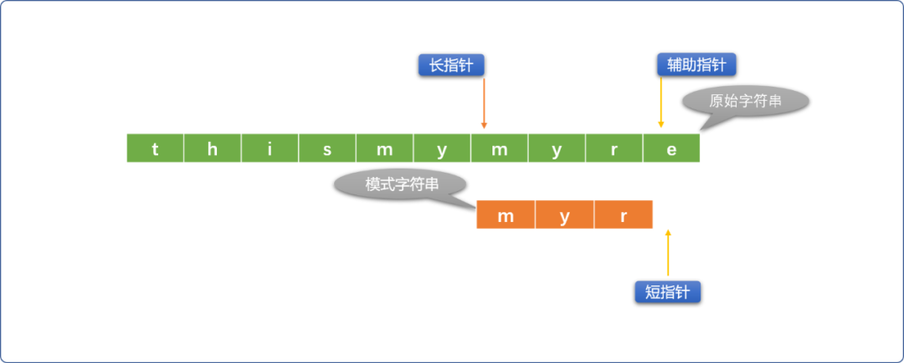
2.2 编码实现
2.2.1 使用辅助指针
使用辅助指针替代长指针和短指针所在位置的字符进行比较。
#include <iostream>
using namespace std;
/*
* BF 字符串匹配算法
* 参数说明
* srcStr 原始字符串
* subStr 子（模式）字符串
* 返回值说明 -1 表示查找失败
*/
int bruteForceMatch(string srcStr,string subStr) {
// 长指针,在原始字符串上移动
int long_index = 0;
// 短指针,在模式字符串上移动
int short_index = 0;
// 辅助指针,初始和长指针位置相同
int fu_index = long_index;
// 原始字符串长度
int str_len = srcStr.size();
// 模式字符串的长度
int sub_len = subStr.size();
while (long_index < str_len-sub_len+1) {
// 把长指针的位值赋给辅助指针
fu_index = long_index;
//初始短指针位置
short_index = 0;
while (short_index < sub_len && srcStr[fu_index] == subStr[short_index]) {
//辅助指针向右
fu_index ++;
//短指针向右
short_index ++;
}
if (short_index == sub_len) {
//匹配成功
return long_index;
}
//匹配不成功，则长指针向右移动
long_index ++;
}
return -1;
}
测试：
int main(int argc, char** argv) {
string srcStr="thismymyre";
string subStr="myr";
int res= bruteForceMatch(srcStr,subStr);
cout<<res;
return 0;
}
输出结果：
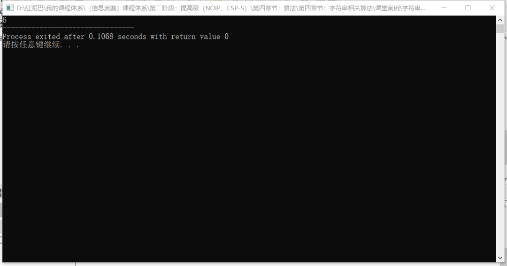
2.2.2 使用增量
以长指针为参照起点，需要比较时，以相对增量位置和短指针位置字符比较。
int bruteForceMatch_(string srcStr,string subStr) {
// 省略变量声明……
while (long_index < str_len-sub_len+1) {
//增量
int i = 0;
int short_index = 0;
while (short_index < sub_len && srcStr[long_index + i] == subStr[short_index]) {
i++;
// 短指针向右
short_index++;
}
if (short_index == sub_len)
return long_index;
long_index ++;
}
return -1;
}
2.2.3 长指针和短指针直接比较
在原始字符串和模式字符串开始齐头并进逐一比较时，最好不要修改长指针的位置，否则，在比较不成功的情况下，重修正长指针的逻辑有点繁琐。
int bruteForceMatch_0(string srcStr,string subStr) {
//省略变量声明……
while (long_index < str_len) {
short_index = 0;
// 长指针和短指针位置的字符比较
while (short_index < sub_len and srcStr[long_index] == subStr[short_index]) {
long_index++;
// 短指针向右
short_index++;
}
if (short_index == sub_len)return long_index-short_index;
// 修正长指针的位置
long_index = long_index-short_index+1;
}
return -1;
}
2.3 BF 算法的时间复杂度
BF 算法直观，易于实现，但是缺少变通，是典型的穷举思想。
如果原始字符串的长度为 m ，模式字符串的长度为 n。时间复杂度则是 O（m*n），时间复杂度较高。
3. RK（Robin-Karp 算法）
RK算法 ( 指纹字符串查找) 在 BF 算法的基础上做了些改进，基本思路：
如下图示，模式字符串和原始字符串比较 3 次后，才发现两者匹配不上，意味着前面的 3 次比较，除了浪费时间，无其它意义。能不能通过一种算法，快速判断出本次比较是否有必要进行。
3.1 RK 的算法思想
- 选定一个
哈希函数（可自定义）。 - 使用哈希函数计算模式字符串的哈希值。如上计算
thia的哈希值。 - 再从原始字符串的开始比较位置起，截取一段和模式字符串长度一样的子串，也使用哈希函数计算哈希值。如上计算
this的哈希值。 - 如果两次计算出来的哈希值不相同，则可判断两段模式字符串不相同，没有开始比较的必要。
- 如果两次计算的哈希值相同，因存在哈希冲突，还是需要使用
BF算法进行逐一比较。
RK 算法使用哈希函数算法杜绝了不必要的比较。
3.2 编码实现：
/*
*自定义哈希函数
*累加字符串中字符的ASCII
*仅用于研究
*/
int myHash(string str) {
int total=0;
for(int i=0; i<str.size(); i++) {
total+=int(str[i] );
}
return total;
}
/*
*
*/
int rkMatch(string srcStr,string subStr) {
// 长指针
int long_index = 0;
// 短指针
int short_index = 0;
// 辅助指针
int fu_index = 0;
// 原始字符串长度
int str_len = srcStr.size();
// 模式字符串的长度
int sub_len =subStr.size();
while (long_index < str_len - sub_len + 1) {
// hash
if ( myHash(subStr) != myHash( srcStr.substr(long_index,sub_len) ) ) {
//哈希值一样
long_index++;
continue;
}
// 把长指针的位置赋给辅助指针
fu_index = long_index;
short_index = 0;
while (short_index < sub_len && srcStr[fu_index] == subStr[short_index]) {
//辅助指针向右
fu_index ++;
//短指针向右
short_index ++;
}
if (short_index == sub_len)return long_index;
long_index++;
}
}
RK 的时间复杂度：
RK 的代码逻辑和 BF 一样，但内置了哈希判断。如果原始子符串长度为 m，模式字符串的长度为 n。时间复杂度为 O(m+n)，如果不考虑哈希冲突问题，理想状态下的时间复杂度可以为 O(m)。
很显然 RK 算法比 BF 算法要快很多。
4. KMP算法
算法的本质是穷举，这是由计算机的思维方式决定的。
我们谈论"好"、“坏” 算法时，所谓的好指能让穷举的次数少一些。比如前面的 RK 算法，通过一些特性提前判断是否值得比较，这样可以省掉很多不必要的内循环。
KMP 也是一样，也是尽可能减少比较的次数。
4.1 KMP 算法思想
KMP 的基本思路和 BF 是一样的（字符串逐一比较）。但在BF 算法做了性能上的优化。
让我们再次回到前面的BF比较流程中。如下图所示，在比较 4 次后，辅助指针和短指针对应位置字符不相同，说明匹配失败。
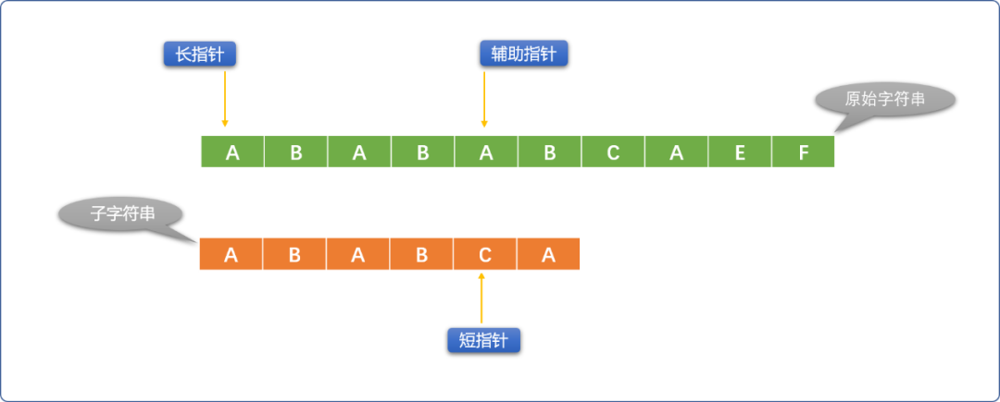
BF的做法是，让长指针向右移一位，短指针恢复原始状态。再重新逐一比较。
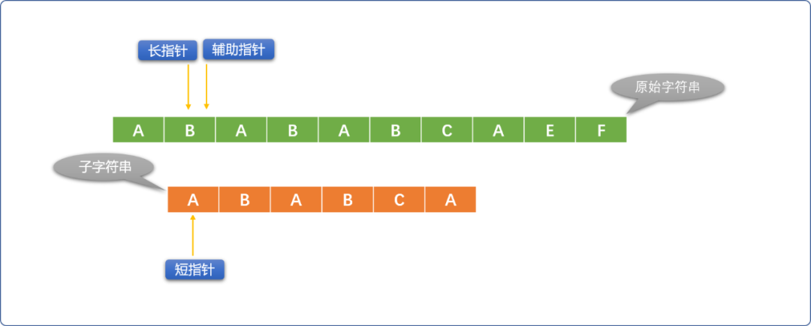
但是，这里应该会有一个思考？难道前面的 4 次成功的比较就没有一点可利用的价值吗？
那就再回放，仔细观察一番。
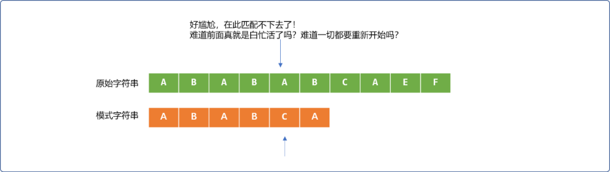
会发现一个有趣的地方。部分匹配成功的ABAB字符串，在原始字符串中的后面的AB字符和模式字符串的前面的AB字符是相同的。如下填充灰色区域。
直观告诉我们，长指针可以不用回到最初开始的位置，只需要让短指针稍微回一下。
如下图所示：
很明显示缩短了很多不必要的比较次数。
那么这个现象有没有通用性？
再分析如下 2 个字符串的比较，即使前面有 4 次比较成功，当匹配失败后，长指针确实可以不用移动，但是短指针必须回到最初位置，再重新开始。
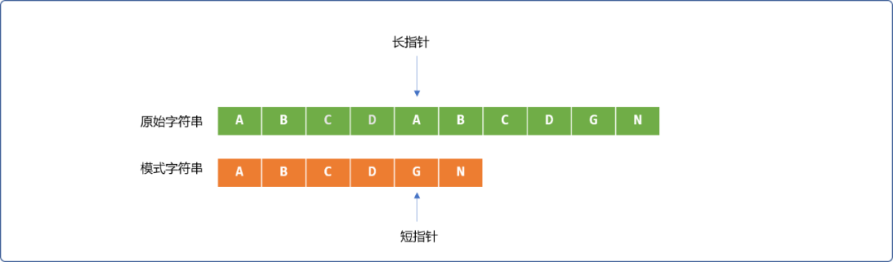
那么在什么情况下可以让短指针只做稍微的移动？
说清楚这个问题之前，先理解几个概念：
- 前缀集合：
如： ABAB 的前缀（不包含字符串本身）集合{A，AB，ABA}。
- 后缀集合：
如：ABAB 的后缀（不包含字符串本身）集合 { BAB，AB，B }。
- PMT值： 前缀、后缀两个集合的交集元素中最长元素的长度。
如：先求 {A，AB，ABA} 和 { BAB，AB，B } 的交集，得到集合 {AB} ，再得到集合中最长元素的长度， 所以 ABAB 字符串的 PMT 值是 2 。
一通前缀、后缀、交集概念说完后，但其结论很简单：仅当共同匹配成功的字符串，其最前面和最后面有相同的部分时，方可以减少短指针的移动量。当相同部分越多，短指针移动的量就越小。
这里就有 2 个问题又摆在面前。
- 如何知道已经匹配成功的字符串有公共的
前缀和后缀以及最大相同长度值。 - 如何根据最大
PMT值修正短指针的位置。
如上的 2 个问题，便是KMP 算法的核心。KMP会把这些信息存储中 “部分匹配表（PMT：Partial Match Table）”中，修改短指针的位置便是根据这个表中数据。
4.2 PMT 的计算
KMP 算法中 的 "部分匹配表（PMT）" 是怎么计算出来的？
如前面图示，原始字符串和模式字符串逐一比较时，前 4 位即 ABAB 是相同的，而 ABAB 存在最大长度的前缀和后缀 ‘AB’ 子串。意味着下一次比较时，可以直接让模式字符串的前缀和原始字符串中已经比较的字符串的后缀对齐。
这些信息都是从PMT表中获取。所以，KMP 算法的核心是得到 PMT 表。
现使用手工方式计算 ABABCA 的 PMT 值：
- 当仅匹配第一个字符
A时，A没有前缀集合也没有后缀集合，所以PMT[0]=0，短指针要移到模式字符串的0位置。 - 当仅匹配前二个字符
AB时，AB的前缀集合{A}，后缀集合是{B}，没有交集。通俗理解，AB不存在前后相同部分。所以PMT[1]=0，短指针要移到模式字符串的 0 位置。 - 当仅匹配前三个字符
ABA时，ABA的前缀集合{A，AB}，后缀集合{BA，A}，交集{A}。所以PMT[2]=1，短指针要移到模式字符串1的位置。 - 当仅匹配前四个字符
ABAB时，ABAB的前缀集合{A ，AB，ABA }，后缀集合{BAB，AB，B}，交集{AB}，所以PMT[3]=2，短指针要移到模式字符串2的位置。 - 当仅匹配前五个字符
ABABC时，ABABC的前缀集合{ A,AB,ABA,ABAB },后缀集合{ C，BC，ABC，BABC }，没有交集，所以PMT[4]=0，短指针要移到模式字符串的0位置。 - 当全部匹配后，意味着匹配成功。所以
PMT[5]=0。
其实在 KMP 算法中，没有直接使用 PMT 表，而是引入了next 数组的概念，next 数组中的值是 PMT 的值向右移动一位。
KMP算法实现： 先不考虑 next 数组的算法，暂且用上面手工计算出来的值作为 KMP 算法的已知数据。
#include <iostream>
using namespace std;
int kmp(string src_str,string sub_str) {
// next 数组
int p_next[] = {-1, 0, 0, 1, 2, 0};
// 指向原始字符的第一个位置
int long_index = 0;
// 指向模式字符串的第一个位置
int short_index = 0;
// 原始字符串的长度
int src_str_len = src_str.size();
// 模式字符串的长度
int sub_str_len = sub_str.size();
// 查询条件
while (long_index < src_str_len && short_index < sub_str_len) {
// -1 是一个神奇的存在，能保证在没有任何一个比较成功时，也能让长指针向前移动至少一步。
if (short_index == -1 || src_str[long_index] == sub_str[short_index]) {
long_index ++;
short_index ++;
} else {
//修正短指针
short_index = p_next[short_index];
}
}
if (short_index == sub_str_len)
return long_index - short_index;
return -1;
}
//测试
int main(int argc, char** argv) {
string srcStr="ABABABCAEF";
string subStr="ABABCA";
int res= kmp(srcStr,subStr);
cout<<res;
return 0;
}
上面的代码没有通用性的，现在实现求解 netxt 数组的算法。
求 next 也可以认为是一个字符串匹配过程，只是原始字符串和模式字符串都是同一个字符串。本质是在匹配成功的字符串中查找后面和前面相同子字符串的数量。
- 当仅匹配一个
A。没前缀和后缀。则PMT[0]=0,next[0]=-1。 - 当匹配
2个。如下图，前缀、后缀没有相同的部分。则PMT[1]=0,next[0]=0。
- 当匹配
3个。如下图，其前缀、后缀有一个字符A相同。则PMT[2]=1,next[0]=0。
- 当匹配
4个。如下图，其前缀、后缀AB字符串相同。则PMT[3]=2,next[0]=1。
- 当匹配
5个。如下图，其前缀、后缀没有相同。则PMT[4]=0,next[0]=2。
- 全部匹配，表示程序匹配成功。
PMT值为0。
编码实现：
// 求解 next 的算法
int* getNext(string patter) {
int mLen = patter.size();
int* pnext=new int[mLen];
for(int k=0; k<mLen; k++)pnext[k]=-1;
int i=0;
int j=-1;
while (i < mLen - 1) {
if (j == -1 || patter[i] == patter[j]) {
i += 1;
j += 1;
pnext[i] = j;
} else
j = pnext[j];
}
return pnext;
}
//测试
int main(int argc, char** argv) {
string srcStr="ABABABCAEF";
string subStr="ABABCA";
int * n= getNext(subStr);
for(int i=0; i<subStr.size(); i++) {
cout<<*(n+i)<<"\t";
}
return 0;
}
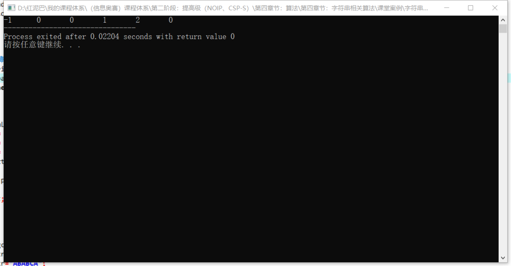
KMP算法的时间复杂度可以达到 O（m+n）。但是，如果模式字符串中不存在相同的前缀和后缀时，时间复杂度接近BF算法。
5. 总结
字符串匹配算法除了上述几种外，还有 Sunday等算法。
从暴力算法开始，其它算法都是在尽可能减少计算次数，提高算法的运行速度。
一枚大果壳
阅读 104

编程驿站
172